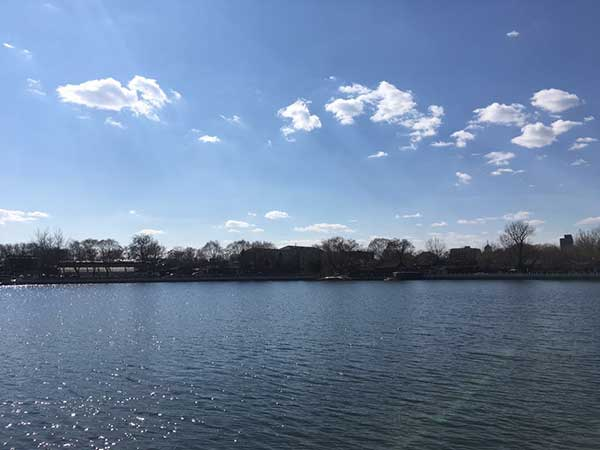
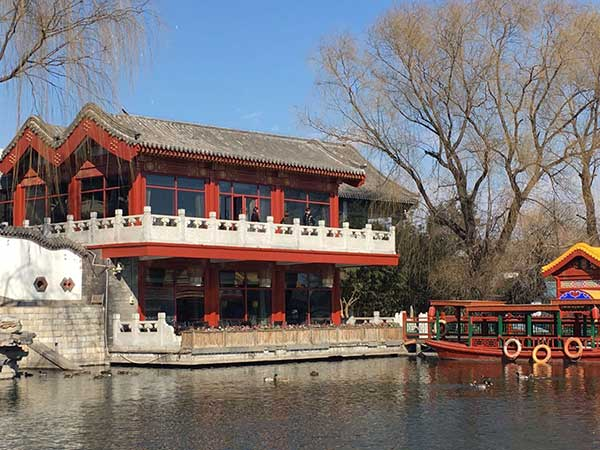

Bylhj 2017年2月25日
今天天气真好，风和丽日，空气干净，天空很蓝，白云朵朵，让人忍不住出去享受这样美好的时光！后海真是个不错的选择。
呼吸着这么干净的空气，真是令人心旷神怡，看到的什么都觉得很美。
来到后海，人不太多。可能因为春寒料峭加上白天的缘故。但觉得这边的天格外蓝，蓝得让人眼睛想流泪；这边的云格外的白，白得让人觉得不真实。
到中午时分，后海里的冰都化成了水，蔚蓝的天空下，海水格外的蓝，让我想起了白居易的一首诗 “日出江花红胜火，春来江水绿如蓝”。
Bylhj 2017年2月25日
今天多走了一些路，竟然步行到了西海。西海也算是什刹海的一部分。不想这边也有美丽的风景。
这不起眼的院子里，竟然有这么抢眼的风景。修得很精致的小楼，华丽的小船，楼下水里竟冒出了一群鸳鸯，数量越来越多，竟数不清。
我不禁想起了一首诗，改编一下吧“城中杨柳三两枝，西海水暖鸳鸯知”，希望苏先生不要责怪我粗俗的语句， 我改编的当然不及他的《惠崇春江晚景》，只是拿来掉书袋罢了。
Bylhj 2017年2月25日
| 餐厅 | 菜品 | 价格（元） |
|---|---|---|
| 风味餐厅 | 宫保鸡丁 | 48 |
| 李记烧烤 | 烤肉串 | 12 |
| 总计 | 60 | |
欢迎登录！
请输入邮箱地址：版权所有